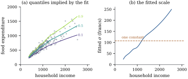

45.5 Models for location, scale and shape
Quantile and expectile regression estimate one feature of the conditional law at a time and never write the law down. The opposite strategy writes it down in full: choose a parametric family with enough parameters to bend as the data require, and let every one of them depend on the covariates through its own structured additive predictor. Rigby and Stasinopoulos (2005) named the result generalized additive models for location, scale and shape.
The gain is a likelihood, and with it penalized estimation, effective degrees of freedom, AIC and Bayesian posteriors. The cost is a parametric assumption about the shape of the conditional distribution, which the data must be allowed to contradict — the subject of Section 45.6.
45.5.1. The model
Let
with each
Taking
The smallest interesting case has
The log link keeps
45.5.2. Estimation
Write
(a) Score. With
(b) Fisher scoring is penalized weighted least squares. Let
the penalized version of the iteratively reweighted least squares of Theorem 34.4.1, with
(c) The normal location-scale model is orthogonal. For Eq. 45.5.2,
(45.5.6)and the expected cross-information
Proof.
(a) By the chain rule
(b) Differentiating Eq. 45.5.4 once more, the contribution of observation
(c) With
Idea. A GAMLSS fit is a stack of weighted smoothers. Each parameter’s block is updated by the same penalized weighted least squares step that fitted a generalized additive model, with weights and working responses supplied by the log-likelihood of the chosen family. The rest is bookkeeping, which is why the framework accommodates any family whose derivatives can be written down.
Orthogonality in part (c) is special to this
parameterization of the normal family; for most families
the cross-information is not zero, and cycling over
blocks then converges more slowly or must give way to a
joint Newton step. The effective degrees of freedom of a
block is the trace
45.5.3. Choosing the family
The distribution is a modelling choice on a par with
the link, made from what the response is. Positive with
a right tail: gamma, inverse Gaussian, lognormal.
Positive with adjustable skewness: the Box–Cox family,
whose third parameter is a power estimated rather than
assumed, generalizing Definition 22.2.1.
Heavy tailed: a
The ancestor is the LMS method of Cole and Green (1992) for growth charts: a Box–Cox power, a median and a coefficient of variation, each a smooth function of age — a three-parameter GAMLSS written a decade before the name, and still how paediatric reference charts are built.
45.5.4. Warnings
Warning (Identifiability). Each predictor in Eq. 45.5.1 contains an intercept and several smooth terms, and a constant moves freely between them. The remedy is that of Chapter 44: constrain every smooth term to sum to zero over the data (Definition 44.1.1), separately in every predictor. Without the constraints the penalized information is singular in as many directions as there are smooth terms. When the same covariate enters two predictors, the concurvity of Proposition 44.2.3 appears between parameters, and no ceteris paribus reading of a single parameter’s curve survives.
Warning (The likelihood is
unbounded). Let the mean predictor be flexible
enough to interpolate one observation, say
Fitting Eq. 45.5.2 to
Engel’s budgets with the scale penalty set to
45.5.5. A location-scale fit to Engel’s budgets
Take Eq. 45.5.2 with a
cubic B-spline basis of
The fitted scale rises from

import numpy as np
import statsmodels.api as sm
from scipy import stats
from scipy.interpolate import BSpline
data = sm.datasets.engel.load_pandas().data
DEGREE, N_INNER = 3, 8
CHOSEN = (10.0 ** 1.5, 10.0 ** 1.0) # the pair the grid search picks out
WILD = 0.01 # a scale penalty small enough to run away
income = data["income"].to_numpy() / 1000.0 # thousands of francs
food = data["foodexp"].to_numpy() / 1000.0
n = len(food)
lo, hi = income.min(), income.max()
inner = np.quantile(income, np.linspace(0, 1, N_INNER + 2)[1:-1])
KNOTS = np.r_[[lo] * (DEGREE + 1), inner, [hi] * (DEGREE + 1)]
def basis(z):
"""The cubic B-spline basis of Section 43.3, with knots at income quantiles."""
z = np.clip(np.atleast_1d(z), lo, hi)
return np.asarray(BSpline.design_matrix(z, KNOTS, DEGREE).todense())
def difference_penalty(q, order=2):
"""K = D'D for the order-th difference matrix D: the penalty of Section 43.4."""
D = np.diff(np.eye(q), order, axis=0)
return D.T @ D
def gamlss_normal(Bm, Bs, y, lam_mu, lam_sig, iters=100, tol=1e-9):
"""Penalized Fisher scoring for y ~ N(mu, sigma^2), mu = Bm b_mu, log sigma = Bs b_sig.
One block at a time: the mean step is a penalized weighted least squares fit with
weights 1 / sigma^2, and the scale step is a penalized Fisher scoring step whose
expected information is the constant 2.
"""
Km, Ks = difference_penalty(Bm.shape[1]), difference_penalty(Bs.shape[1])
b_mu = np.linalg.solve(Bm.T @ Bm + lam_mu * Km, Bm.T @ y)
b_sig = np.linalg.solve(Bs.T @ Bs, Bs.T @ np.full(len(y), np.log(y.std())))
for _ in range(iters):
sigma = np.exp(np.clip(Bs @ b_sig, -8, 4))
w = 1.0 / sigma ** 2 # working weights for the mean
new_mu = np.linalg.solve(Bm.T @ (w[:, None] * Bm) + lam_mu * Km, Bm.T @ (w * y))
u = (y - Bm @ new_mu) ** 2 / sigma ** 2 - 1.0 # score in the log-sigma direction
new_sig = b_sig + np.linalg.solve(2 * Bs.T @ Bs + lam_sig * Ks,
Bs.T @ u - lam_sig * Ks @ b_sig)
step = max(np.max(np.abs(new_mu - b_mu)), np.max(np.abs(new_sig - b_sig)))
b_mu, b_sig = new_mu, new_sig
if step < tol:
break
return b_mu, b_sig
def neg_log_score(mu, sigma, y):
"""Minus the mean log density: the logarithmic score of Section 45.6."""
return -np.mean(stats.norm.logpdf(y, mu, sigma))
folds = np.random.default_rng(7).permutation(n) % 10
def cross_validate(design, lam_mu, lam_sig):
"""Ten-fold cross-validated log score of one specification."""
total = 0.0
for k in range(10):
train = folds != k
Bm, Bs = design(income[train])
b_mu, b_sig = gamlss_normal(Bm, Bs, food[train], lam_mu, lam_sig)
Bm, Bs = design(income[~train])
total += neg_log_score(Bm @ b_mu, np.exp(np.clip(Bs @ b_sig, -8, 4)), food[~train])
return total / 10
spline_scale = lambda z: (basis(z), basis(z))
Bm, Bs = spline_scale(income)
b_mu, b_sig = gamlss_normal(Bm, Bs, food, *CHOSEN)
mu, sigma = Bm @ b_mu, np.exp(Bs @ b_sig)
cv_chosen = cross_validate(spline_scale, *CHOSEN)
print(f"smoothing parameters: {CHOSEN[0]:.3g} for the mean, {CHOSEN[1]:.3g} for the scale")
print(f"cross-validated log score {cv_chosen:.4f}")# barely penalize the scale: the in-sample likelihood climbs, the honest score collapses
b_mu_w, b_sig_w = gamlss_normal(Bm, Bs, food, CHOSEN[0], WILD)
wild_loglik = np.sum(stats.norm.logpdf(food, Bm @ b_mu_w, np.exp(np.clip(Bs @ b_sig_w, -8, 4))))
loglik = np.sum(stats.norm.logpdf(food, mu, sigma))
wild_cv = cross_validate(spline_scale, CHOSEN[0], WILD)
print(f"log-likelihood: {loglik:.1f} at the chosen penalty, {wild_loglik:.1f} at"
f" lambda_sigma = {WILD:g}")
print(f"cross-validated log score: {cv_chosen:.4f} against {wild_cv:.4f}")45.5.6. Variations
Bayesian GAMLSS. Every quadratic penalty is a normal prior on the coefficients (Proposition 39.5.1), so Eq. 45.5.3 is a log posterior up to the smoothing-parameter priors, and Section 39.4 transfers whole, with those parameters sampled rather than tuned (Klein, Kneib, Lang and Sohn 2015). Boosting. Feeding a GAMLSS log-likelihood to the componentwise boosting of Section 30.4 gives an algorithm that also selects which terms enter which predictor (Mayr, Fenske, Hofner, Kneib and Schmid 2012). Multivariate responses. With a multivariate family the dependence parameters become regression problems too; Section 45.7 points at the literature.
45.5.7. Exercises
A. Check your understanding
In Example (Mean and scale together)
the mean block has
Solution. As
B. Practice
For a gamma response with mean
Solution. With
Verify from Eq. 45.5.6 that
the working response for the scale block of the normal
location-scale model is
C. Going deeper
Show that the normal family parameterized by